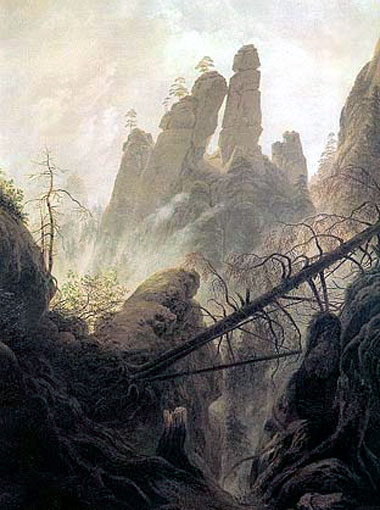
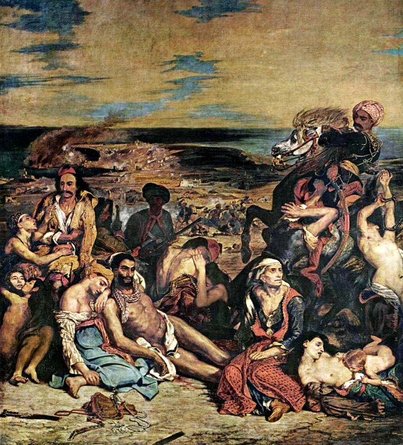

Предыдущая часть - "Классицизм XVIII – начала XIX вв."
- IN NOVA FERT ANIMUS
- К новому устремляется душа
- (ОВИДИЙ)
- К новому устремляется душа
«Похоже на то, что первые слова «Метаморфоз» Овидия - девиз человеческого рода» - замечает остроумный Вольтер. Действительно, ХIX век в истории европейских стран был богат переменами во всех областях жизни, и в том числе – в искусстве.
Великобритания и Нидерланды ещё в ХVI и ХVII вв. пережили буржуазные революции и вступили на путь развития капитализма. Во Франции это эпохальное событие состоялось в 1789 – 94 гг.
Искусство отреагировало на изменения общественного строя появлением нового направления – романтизма, быстро переросшего в стиль, противостоящий классицизму и его последней стадии – академизму.
Сторонники прогресса в культуре приветствовали новый стиль за его органическую связь с жизнью. По мысли И.В.Гете: «Понятием романтизма охватывают всё, что есть в современности живого, и всё, что животворно в данный миг» [Л. 39, с. 445]. Гёте видит в романтизме путь развития «от манерности, рутины, педантизма к прочувствованному, свободомыслящему искусству» [Л. 39, с. 149].
Поэты, философы, художники ХIX в. высказали много прекрасных слов о романтизме. «Это мистическое проявление нашего глубочайшего духа в образе, это вторжение мирового духа, это очеловечение божественного, одним словом: это предчувствие бесконечного в видимом и воображаемом и есть романтическое» [Л. 41, с. 160].
Все основные категории романтического искусства (и не только живописи, но также литературы, музыки и др.) противоположны категориям классического. Проиллюстрируем это небольшой таблицей.
| Классическое | Романтическое |
| Эстетические категории | |
|
|
| Философские категории | |
|
|
| Композиционные категории | |
|
|
Изменение стиля в искусстве неизбежно сопровождается изменениями образа самого Художника – его классовой принадлежности, темперамента, впечатлительности к реалиям жизни. Классицист – это чистое зеркало идеального мира античности, хранитель его (мира) заветов. Романтик – чувствилище природы, игралище страстей, поэт земного бытия.
Романтизм был широко распространён в искусстве стран Европы в первой половине ХIX в. Приведём здесь пример творчества художников-романтиков из Германии, Франции и Англии.
Фридрих, Каспар Давид (1774 – 1840)
Родился в Грейсвальде (Германия), в семье ремесленника, пережил тяжёлое детство. Учился в Копенгагенской Академии художеств, затем работал в Дрездене. Много путешествовал по странам Европы. Изображал поросшие лесом горы Баварии, пустынное побережье Померании с человеческими фигурками, как бы затерянными среди природы. Широко использовал световые эффекты – сумрак, кровавые закаты и рассветы, контрасты света и тьмы, лунный свет.

«Фридрих воплощал стихийную мощь, грозную и почти мистическую беспредельность мироздания, тонкое созвучие сил природы движениям человеческой души, чувство прорыва в неведомое» - (из текста анонимного автора).

В пейзажах Фридриха звучат также мотивы враждебности сил природы слабому человеческому существу, одиночества и щемящей тоски, предчувствие смерти. После припудренного холёного академизма немецкий Художник показал горькую правду жизни, и в этом мы видим его несомненную заслугу.
Эжен Делакруа ( 1798 – 1863)
Родился в Париже; отец – Шарль Делакруа, член конвента, министр, голосовал за смерть Людовика ХVI.
Э. Делакруа учился в Париже в мастерской П.Н.Герена, где сблизился с Теодором Жерико. Изучал в Лувре старых мастеров (особенно Рубенса).
Уже в ранний период творчества ощущение сопричастности великим, изменяющим лицо мира событиям породило гражданский пафос и драматический накал произведений Делакруа, сделали его в дальнейшем ярчайшим выразителем и главой романтизма во французском искусстве.
Полна напряжения и мрачного трагизма картина Делакруа «Ладья Данте» (1822 г.); духом активного протеста против жестокости и насилия, глубокого сочувствия к бедствиям греческого народа пронизана «Резня на Хиосе» (1823 – 1824), «Смерть Сарданапала» (1827 г.)

Делакруа нередко черпал мотивы в произведениях У. Шекспира, И.В.Гете, Д. Байрона, Вальтера Скотта, обращался к событиям Великой французской революции и другим эпизодам национальной истории. «Битва при Пуатье» ( 1830 г.), «Свобода, ведущая народ» (1830). По-своему необычно трактовал Художник восточную тему: «Алжирские женщины» (1833 – 1834), увлекался изображениями яростной борьбы.
Эжен Делакруа был признанным предводителем романтического направления в европейской живописи. Его искусство отличает динамизм, свободная композиция, энергичный и экспрессивный рисунок, богатство колорита, и при этом – глубокая содержательность и сила убеждения.
Уильям Тернер ( 1775 – 1851)
Родился в Лондоне. Отец художника был мастером по изготовлению париков, а в конце 70-х годов открыл цырюльню. Мать его была душевнобольной.
В декабре 1789 г. 14-летний Уильям был зачислен в Королевскую академию (его экзаменовал Д. Рейнольдс). Основным методом обучения Тернера было копирование работ других художников. Особенно восхищал его Клод Лоррен; картина «Отплытие царицы Савской» вызывала в молодом художнике слёзы восторга.
В возрасте 24 лет Тернер был избран членом-корреспондентом Королевской академии. В 1801 г. он выставил в Академии картину «Море у Бриджуотера», которая имела шумный успех. В 1802 г. Тернер стал самым молодым художником, удостоившемся звания Королевского академика.
В последующие годы он стал профессором перспективы в Королевской академии, писал картины о наполеоновских войнах, побывал в Италии, где изучал работы Тициана, Тинторетто, Рафаэля.
Трудолюбие Тернера достойно удивления. После него осталось более 10 тысяч рисунков и набросков, не считая картин. Джон Рёскин назвал его «величайшим художником всех времён». Рассматривая картины Тернера, мы поймём восторг английского ученого, хотя и благоразумно воздержимся от категорических оценок.
Это лицо молодого романтика. Анфас, строгая симметрия, всё прямое: пробор, нос, рот, взгляд. Большие глаза широко открыты: никаких скрытых мыслей, условностей, притворства – открытость характера и души, приятие жизни, какова она есть, наивность молодости. И только галстук и шарф завязаны с романтической небрежностью – это бунт против классической аккуратности.
Дремлющая в земле демоническая сила вырвалась наружу, и люди поняли всё своё ничтожество перед лицом стихий. Строгая симметрия композиции и классическая цветовая гамма внушают мысль о закономерности хтонических катастроф и заставляют признать красоту и мощь этого явления.
Головокружительное противопоставление величия горного массива и хрупкого моста – произведения рук человека. Голова зрителя кружится от зрелища человеческих фигурок, бредущих по узкой каменистой тропе, с которой так легко упасть в бездну, на дно ущелья, в ревущий водный поток.
Моряк окончил свой путь – и мир погрузился в серо-чёрную мглу. Дымы пароходов наклонились, образовав крест над морской могилой человека.
И только вдали белеет призрак города и башни – образ посмертного блаженства души покойника. «Помни о смерти и умей ценить жизнь» - говорит эта картина.

Ужасающая картина борьбы человека со стихией. Леденящий холод черно-синего колорита. Свобода кисти, сравнимая только со свободой самoй воздушной стихии. От этой картины до импрессионизма – один шаг (нужно только изменить отношение к жизни и природе).
Однако, у природы бывает и хорошая погода. На этой картине Природа улыбается и наслаждается покоем. Появляется самая оптимистическая гамма красок – оранжевая-голубая-белая. Вспоминается песня: «Лучше гор могут быть только горы, на которых ещё не бывал».
Рассматривая живопись европейских романтиков, трудно удержаться от восторга перед силой их воображения и мастерством внушения высоких эмоций. Возникает вопрос – можно ли считать романтизм «буржуазным» стилем, поскольку он возник как ответ на запросы класса буржуазии, восходящего на историческую арену? Думаю, что ответ не может быть однозначным. Противостояние этого стиля классицизму и академизму – несомненный факт, но нельзя игнорировать и того факта, что романтизм опоэтизирует действительность, то есть, говоря проще – приукрашивает и приподнимает её над правдой жизни, а это не свойственно «буржуазному» мировоззрению.
Искусство Каспара Фридриха, Эжена Делакруа, Уильяма Тернера можно назвать «бесклассовым», то есть «просто человеческим» в лучшем смысле этого слова. Потому и живёт оно в веках.
Л. Миронова, 09.01.2017